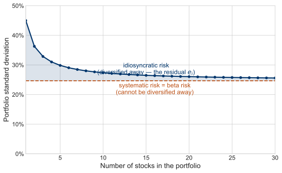
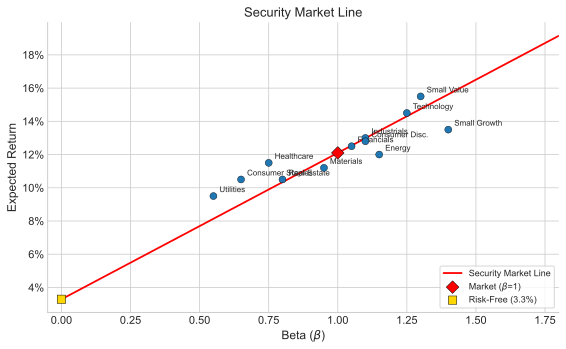

Chapter V
Further Explorations of the Capital Asset Pricing Model
The risk-return tradeoff, the security market line, beta estimation, and assessing the CAPM.
I. A Mathematical Model of Expected Returns
How much return should a security earn — not more, not less, but what is fair given its risk? The Capital Asset Pricing Model gives a startlingly simple answer, and it is the single most-used equation in practical finance. It says the expected return on any security is the riskless rate plus a reward for one — and only one — kind of risk: the security’s exposure to the market as a whole.
👈 click any term to name it
In any single period the security’s realized return also includes a residual — the part the market does not explain:
On average that residual is zero, so taking expectations returns us to the CAPM above. How are beta and the residual actually measured? By regression — exactly what the live figure in Section V does: the slope of the fitted line is beta, and the scatter of points around it is the residual.
The whole model relies on a single statistic, beta. Formally, beta is the security’s covariance with the market divided by the market’s variance:
Beta
$$\beta_i = \frac{\text{cov}(i,m)}{\text{var}(m)} = \frac{\rho_{i,m}\,\sigma_i\,\sigma_m}{\sigma_m^2} = \frac{\rho_{i,m}\,\sigma_i}{\sigma_m}$$Key Concept: What is not in the CAPM
One surprising thing about this equation is what is not in it: there is no measure of the security’s own standard deviation. Under the CAPM you do not care about a security’s total volatility — only about its beta with respect to the market. Risk is re-defined as the quantity of exposure the security has to fluctuations in the market portfolio. A wildly volatile stock with a low beta requires only a modest return; a placid stock with a high beta requires a large one.
Which Model, and When?
It is worth being precise about when each of our two models applies. The Markowitz mean–variance model of Chapter 2 answers a question about an investor’s entire wealth: given all the assets available, what is the single best overall allocation? The CAPM answers a different, marginal question — what happens to an already-diversified portfolio when one more security is added to it. Ross’s argument, expanded below, is exactly that marginal calculation: the effect of a small purchase $dx$ of a single asset.
Key Concept: Which Model, When?
Use mean–variance to choose the overall allocation of your wealth. Use the CAPM (beta) to judge the addition of a single security to an already-diversified portfolio. One question is about the whole; the other about the margin.
This marginal view lets us re-read a picture from the beginning of the course. Recall the diversification curve: as securities are added to a portfolio — one, two, ten, thirty and beyond — its standard deviation falls quickly at first and then flattens toward a floor it never crosses. We can now name the two pieces.

Figure 5.1. Recalling the diversification curve. As stocks are added to a portfolio, its standard deviation falls toward a floor. The part that melts away is idiosyncratic (residual) risk — the $e_i$ of the equation above; the floor that remains is systematic, or beta, risk — the only risk the CAPM prices.
The risk that melts away as the portfolio grows is idiosyncratic risk — the residual $e_i$ from the equation above. In a large, well-diversified portfolio it becomes, in the pure model, irrelevant: it averages out, and the investor is paid nothing to bear it. The floor that remains — the risk that cannot be diversified away — is beta risk, the security’s co-movement with the market. Ross’s theorem, below, is the formal proof that only this second piece is priced.
One caveat lies in the fine print of that marginal argument. It sets aside the asset’s own-variance term, $(dx)^2\,\text{var}(A)$, as negligible next to its covariance term — entirely safe for ordinary assets. But for a security with extremely high variance — a lottery-like payoff, or fat, near-undefined tails — that own-variance term need not vanish, and the marginal conclusion can fail. Idiosyncratic risk stops being negligible, and such an asset can matter to a portfolio in its own right. The CAPM’s clean verdict that only beta is priced is a statement about the well-behaved, marginal case.
Where does this come from? Ross’s derivation (optional)
The intuition behind beta — that a well-diversified investor cares about a security’s contribution to portfolio risk, not its standalone volatility — can be made precise. An asset with a low correlation to the tangency portfolio is desirable because it shifts the efficient frontier to the left.
Figure 5.2. Adding a low-correlation asset shifts the efficient frontier to the left, reducing portfolio risk for a given return level.
Stephen Ross formalized this in an article titled “Finance,” published in The New Palgrave. Suppose you hold the market portfolio $m$ and consider buying a quantity $dx$ of asset $A$, financed by borrowing at the riskless rate. This augments the market portfolio’s expected return by
Change in Expected Return
$$dE_m = [E_A - R_f]\,dx$$and augments its variance. After adding the asset the variance is $v + dv = v + 2\,dx\,\text{cov}(A,m) + (dx)^2\,\text{var}(A)$, so the change is $dv = 2\,dx\,\text{cov}(A,m) + (dx)^2\,\text{var}(A)$, which for small $dx$ is approximately $dv \approx 2\,dx\,\text{cov}(A,m)$. The risk–return tradeoff from investing a little in $A$ is therefore
Risk–Return Tradeoff for A
$$\frac{dE_m}{dv} = \frac{[E_A - R_f]\,dx}{2\,dx\,\text{cov}(A,m)} = \frac{E_A - R_f}{2\,\text{cov}(A,m)}$$In equilibrium an investor must be indifferent between buying a little more $A$ and simply levering up the market portfolio itself. The same tradeoff for buying $dx$ of the market portfolio is $\dfrac{E_m - R_f}{2\,\text{var}(m)}$ — identical in form, but with $\text{cov}(A,m)$ replaced by $\text{var}(m)$ (the covariance of the market with itself). Setting the two equal,
and the ratio $\text{cov}(A,m)/\text{var}(m)$ is exactly the beta above. The pricing equation of the CAPM falls straight out of the no-free-lunch condition.
Extension: When Does Idiosyncratic Risk Still Matter?
The argument above dropped the own-variance term $(\Delta x)^2\,\text{var}(i)$ as small next to the covariance term. If we keep it, we can say exactly when adding an asset still helps a diversified portfolio — and when a high-variance asset stops obeying the tidy $\beta<1$ rule.
Adding $\Delta x$ of asset $i$ raises portfolio variance by $\Delta v_i = 2\,\Delta x\,\text{cov}(i,p) + (\Delta x)^2\,\text{var}(i)$; adding the same amount of the portfolio itself raises it by $\Delta v_p = 2\,\Delta x\,\text{var}(p) + (\Delta x)^2\,\text{var}(p)$. Asset $i$ is diversifying when $\Delta v_i < \Delta v_p$:
Dividing by $\text{var}(p)$ and using $\beta_i = \text{cov}(i,p)/\text{var}(p)$ gives $\;2\,\Delta x\,\beta_i + (\Delta x)^2\,\dfrac{\text{var}(i)}{\text{var}(p)} < 2\,\Delta x + (\Delta x)^2$, which rearranges to the diversifying condition:
Diversifying condition (own-variance retained)
$$\beta_i \;<\; 1 - \frac{\Delta x}{2}\left(\frac{\text{var}(i)}{\text{var}(p)} - 1\right)$$For an infinitesimal trade ($\Delta x \to 0$) this is just the familiar $\beta_i < 1$. But the own-variance term reasserts itself for larger positions. Setting $\Delta x = \tfrac{1}{2}$ gives $\beta_i + \tfrac{1}{4}\,\dfrac{\text{var}(i)}{\text{var}(p)} < \tfrac{5}{4}$; with $\sigma_i = 40\%$ and $\sigma_p = 20\%$ (a variance ratio of 4), the threshold tightens all the way to $\beta_i < \tfrac{1}{4}$. A very high-variance asset must have a much lower beta before it earns a place — the CAPM’s “only beta matters” verdict is really the small-trade limit.
Figure 5.3. The diversifying-beta threshold once the own-variance term is retained. The curve is $\beta^\ast(\Delta x) = 1 - \tfrac{\Delta x}{2}(k-1)$, where $k=\text{var}(i)/\text{var}(p)$; an asset diversifies only if its beta lies in the shaded region below it. At $\Delta x\to 0$ the threshold is the textbook $\beta<1$; as the position grows, a high-variance asset’s threshold falls sharply. After W. Goetzmann, note on diversification (2022).
II. The Security Market Line
The CAPM equation describes a linear relationship between risk and return. Risk, in this case, is measured by beta. We may plot this line in mean and $\beta$ space:
Figure 5.4. The Security Market Line, made interactive. The line is $E[R_i] = R_f + \beta_i\,(E[R_m]-R_f)$ — its intercept is the riskless rate and its slope is the market risk premium; the market portfolio $M$ sits at $\beta=1$. Drag the security anywhere in the plot. Its vertical distance from the line is its alpha: land it above the line and it is under-priced (a bargain, positive alpha); below the line it is over-priced. In equilibrium every security is pulled onto the line, where alpha is zero and expected return depends only on beta — not on the security’s own volatility.
One remarkable fact that comes from the linearity of this equation is that we can obtain the beta of a portfolio of assets by simply multiplying the betas of the assets by their portfolio weights. For instance the beta of a 50/50 portfolio of two assets, one with a beta of 0.8 and the other with a beta of 1, is 0.9. Easy!
The line also extends out infinitely to the right, implying that you can borrow infinite amounts to lever up your portfolio.
Why is the Line Straight?
Well, suppose it curved, as the blue line does in the figure below. An investor could borrow at the riskless rate and invest in the market portfolio. Any investment of this type would provide a higher expected return than a security which lies on the curved line below. In other words, the investor could receive a higher expected return for the same level of systematic risk. In fact, if the security on the curve could be sold short, then the investor could take the proceeds from the short sale and enter into the levered market position -- generating an arbitrage in expectation.
Figure 5.5. If pricing were non-linear (curved blue line), arbitrage opportunities would arise: investors could lever the market portfolio to achieve higher returns at the same beta.
III. Expectations vs. Realizations
It is important to stress that the vertical dimension in the security market line picture is expected return. Things rarely turn out the way you expect. However, the CAPM equation also tells us about the realized rate of return. Since the realization is just the expectation plus random error, we can write:
Realized Return
$$R_i = R_f + \beta_i\left[R_m - R_f\right] + e_i$$This is useful, because it tells us that when we look at past returns, they will typically deviate from the security market line -- not because the CAPM is wrong, but because random error will push the returns off the line. Notice that the realized $R_m$ does not have to behave as expected, either. So, even the slope of the security market line will deviate from the average equity risk premium. Sometimes it will even be negative!
IV. An Example
The appeal of the CAPM is clear -- it radically simplifies an inherently complex and troublesome problem. The question of the appropriate discount rate becomes virtually a back-of-the-envelope calculation! In fact, if you know a security's beta, estimating the discount rate is a snap: multiply beta times the expected risk premia of the market portfolio over the riskless rate.
For example, suppose you are a banker considering a private equity investment in a company with a new drug process. The process is inherently risky, i.e. the standard deviation of the project is 75% per year. The beta of the project is 0.5. The $R_f = 5\%$ and the $E[R_m] = 13.5\%$. What is the required rate of return on the project?
Theory tells us that the answer does not depend upon the volatility associated with the returns. Instead we use the beta of the project:
This is the required rate of return on the project. The answer would not change if the range of outcome next year broadened or narrowed. The $\beta$ is the only relevant piece of information -- now all that remains is to estimate it!
Key Concept: Only Beta Matters
Under the CAPM, the appropriate discount rate for a project depends solely on its beta, not its total volatility. A high-variance project with low beta requires a lower discount rate than a low-variance project with high beta.
V. How Do You Estimate Beta?
$\beta$ may be all we need, but it is not immediately clear how it should be estimated. What we really need is a quantitative estimate of how the future return changes in response to future changes in the world market portfolio. Good Luck! It is tough to even guess the empirical composition of the market portfolio, let alone estimate a beta. In practice (although it is not theoretically justified) analysts typically use the S&P 500 equity risk premium in this calculation. To estimate beta, regress the security returns for the past several periods (usually 60 months) on the market returns. The slope in this regression is an estimate of $\beta$.
Figure 5.6. Estimating beta from live data. Enter a ticker; the figure pulls up to 60 months of dividend-adjusted prices for the stock and for SPY (the S&P 500), computes monthly returns, and regresses the stock’s return on the market’s. The fitted line’s slope is beta (systematic risk) and its intercept is alpha (average return unexplained by the market). Data: Yahoo Finance, via a public CORS proxy; the current riskless rate is the 13-week T-bill (^IRX).

Figure 5.7. Beta versus average return for major asset classes, computed from SBBI data. The Security Market Line (SML) shows the CAPM-predicted linear relationship. The slope of the line through each point estimates $\beta$.
Notice that this shows concretely the empirical property of $\beta$ as it measures the co-movement of the security with the market. Unfortunately, since the S&P 500 is not the world market portfolio, we are somewhat in the dark about how well this beta measures the true systematic risk.
VI. Assessing the CAPM
The CAPM is a classical model in finance. It is an equilibrium argument that, if true, answers most important investment questions. It tells us where to invest, how to invest and what discount rate to use for project cash flows. Not only that, it is a disarmingly simple model. The expected return of a security depends upon a simple statistic: $\beta$. The relationship between risk and return is linear. Calculation of portfolio risk is trivial.
At the same time, the CAPM is revolutionary. It tells us that the variance of a project is NOT a factor in determining the appropriate, risk-adjusted discount rate. It turns financial research from roll-up-your-sleeves fundamental analysis into a statistics problem. In short, the CAPM turned Wall Street on its head.
VII. Conclusion: Is the CAPM True?
Here comes the bad news. Despite twenty years of attempts to verify or refute the Capital Asset Pricing Model, there is no consensus on its legitimacy. There are a few hints that the model is incorrect. For starters, we all hold different portfolios. Therefore, it cannot be exactly true. Researchers have focused upon the more interesting issue of whether rates of return depend upon $\beta$ and whether the elegant, linear form of the model holds for stocks. What they have found is that real markets typically deviate broadly from the exact model. While there are long periods in U.S. Capital market history when realized returns are positively related to betas, there are also long periods when they are not.
Among the most forceful arguments against the CAPM advanced in recent times is a study by Eugene Fama and Kenneth French. These authors found that "beta did a relatively poor job at explaining differences in the actual returns of portfolios of U.S. stocks." Instead, Fama and French noted that there were other variables besides beta with respect to the market that explained returns. Some of these were "fundamental" ratios long used by financial analysts in the pre-CAPM era such as Book to Market Ratio and Earnings Price Ratio. Another was simply the relative size of the company. The evidence against the CAPM continues to grow and despite its elegance, most researchers have turned to more complex, but more powerful models.
Key Concept: Fama-French Challenge
Fama and French found that firm size and book-to-market ratio explained cross-sectional return differences better than beta alone. This evidence spurred the development of multi-factor models that extend beyond the single-factor CAPM.